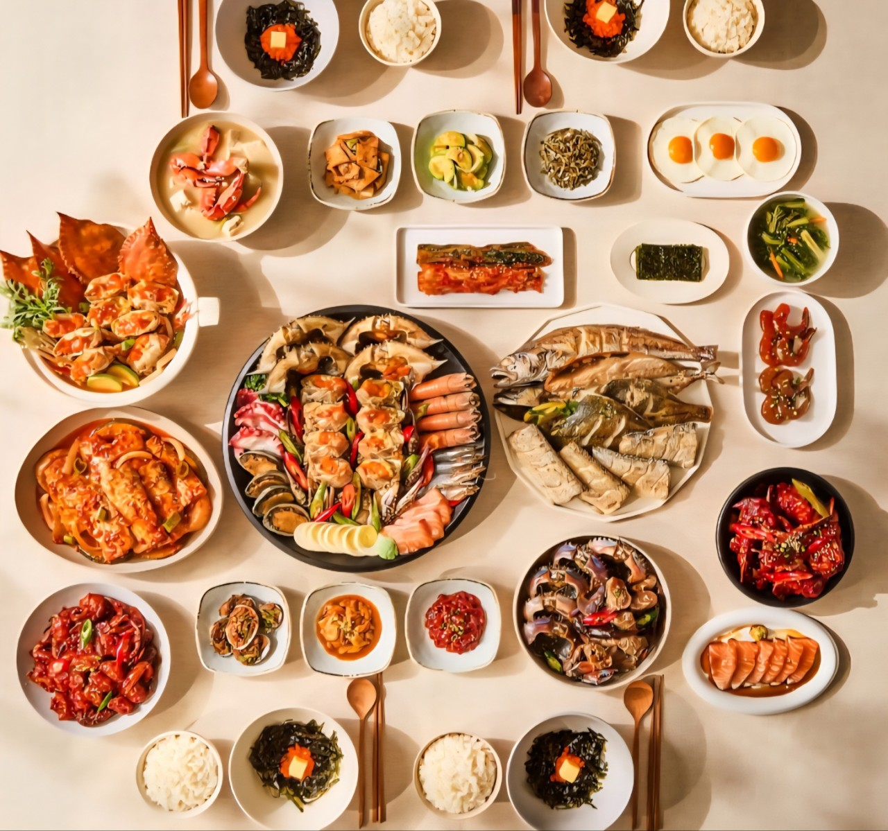
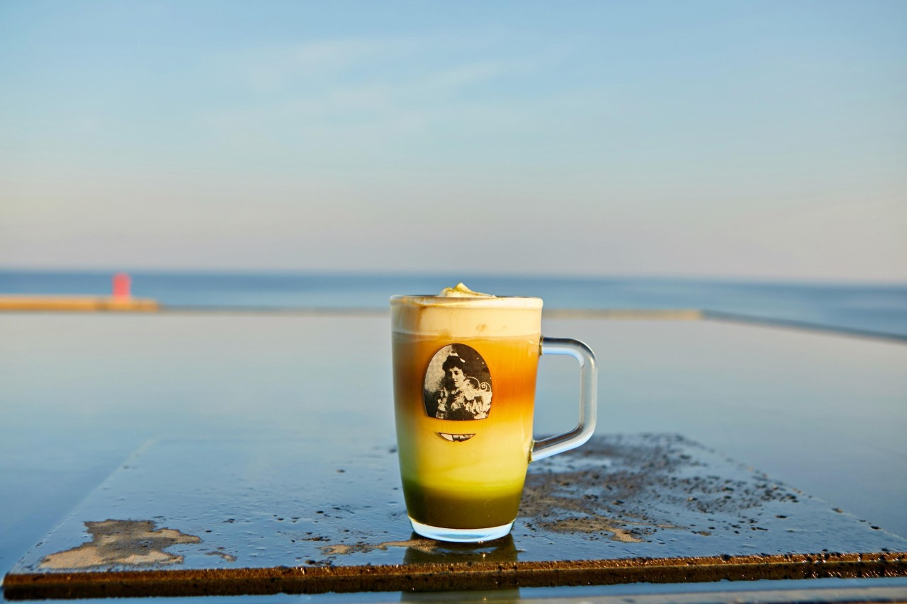

FOOD
여수 명동 게장
여수는 게장으로 유명한 곳입니다.
바닷사람인 제가 느끼기에도 비린 느낌 없이
깔끔하고 맛있는 게장을 파는 곳입니다.
P.E.I coffee
어딜 가나 감성 카페는 있지만 이 집은 조금 특별합니다.
큰 창으로 보이는 바다와 넓은 건물에 장식 된 커피들이 인상적이고
마카다미아 크림 라떼는 이 집의 시그니쳐입니다.
자연in PLANT827

제주도엔 많은 가게들이 있지만 이번엔 이 곳을 소개하고 싶습니다.
제주 느낌 물씬 나는 백향과로 만든 라떼도 정말 맛있고
표고버섯 따기 체험도 즐길 수 있는 이색 카페 입니다.